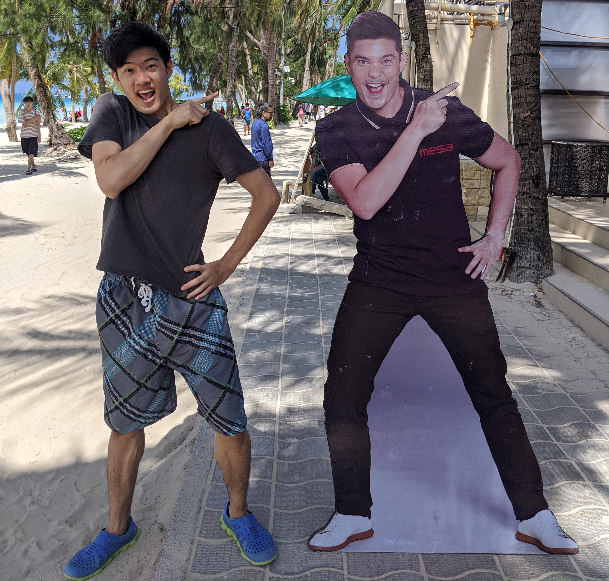

Tristan Chen
The Rule Is Sleeping Tight At Night

➤ Established the Product Management Ecosystem for the team by introducing Notion and other tools
➤ Created outreach tracking tool, analyzed prospecting tools, and collected potential customers
➤ Facilitated an explainer animation for investment pitching by outsourcing the designer on Fiverr
➤ Brainstormed the company vision and the pivoting with the CEO/Founder
➤ Researched and compared competitors in global and made a database also analyzed target market
➤ Designed our pitch deck slide for Automate Show 2022

➤Researched medical image processing and optical systems with Nvidia
➤Implemented Pix2PixHD and other high-resolution image-to-image synthesis models
➤Researched physics simulators for trajectory prediction machine learning model
➤Built lab infrastructures (NAS, Git server)
Advised by Prof. Hung-Wen Chen
HW Group: https://mx.nthu.edu.tw/~hungwen/
Taught deep learning, Python, Papers With Code implementation in International Graduate Deep Learning Course
Course Lecturer: Prof. Hung-Wen Chen
➤ Designed computer vision algorithms to detect the defections with OpenCV & Numpy in C#/Python
➤ Connected algorithm, AI model API, and back-end controlling system (MVVM) for the AOI software
➤ Assembled conveyor, vision system (cameras, light sources), and processor for the AOI hardware
➤ Calibrated aperture and focal length of industrial cameras to get the best view of defects on objects
➤ Wrote automated scripts for microcontrollers (Arduino, RaspberryPi, Esp32, etc.)
➤ Integrated software system, hardware system, and robot control system to generate AOI machines

➤ Developed automated chatbot testing application with Java and Selenium
➤ Developed back-end features on MVC framework for chatbot backstage system with C#.Net
➤ Connected voice conversation system to chatbot front-end with Javascript and jquery
➤ Debugged back/front-end with Scrum Team by using Javascript, Html, CSS, and C#

➤ Assisted MRI experiments on glucose statistics of lab rats in dying cells
➤ Researched medical image recognition technology to identify cancer

Activities: Community Developer in Google Developer Student Club
Courseworks-
➤Technical: Space Robotics Development (Simulation, ROS), Bio-inspiring Robot Design & Experiment, Robotics Caregivers, Modern Making (SolidWorks, 3D printing, Laser Cutting), Architecture & Principle of Programming
➤Business: Product Management, Business Model & Strategy, Innovation & Entrepreneurship, Venture Governance, Legal Issues in New Venture Creation
Paper Publish: HAT: Head-Worn Assistive Teleoperation of Mobile Manipulators (accepted by ICRA 2023)
Activities: Director/Founder of Student Association of Department
Independent Study: Image Recognition, Deep Learning, Vision Algorithm, Computer Vision
Research Projects: Mango’s Level Classification, Dementia Protection System (Sleeping pose analysis)
Python, C#, Java, C++, Javascript
SQL, Git, Scrapy, Design Pattern, Linux, ROS
Deep Learning, IOT, Embedded, Computer Vision, Mobile App, Game Dev, Microcontroller (Arduino, ESP, RaspberryPi)
Agile Development & Scrum
Deep Learning(Andrew Ng), Digital Marketing(UIUC), Project Management(Google)